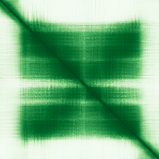

type: protein-evaluation gene: "BOD1L2" date: 2026-06-01 tags: [protein-scout, chromatin, evaluation] status: scored ---
BOD1L2 核蛋白评估报告
1. 基本信息
| 项目 | 内容 |
|---|---|
| 基因名 / 别名 | BOD1L2 / Biorientation of chromosomes in cell division protein 1-like 2 / BOD1P / FAM44C |
| 蛋白大小 | 172 aa / 18.1 kDa |
| UniProt ID | Q8IYS8 |
| 评估日期 | 2026-06-01 |
2. 评分总览 (新权重)
| 维度 | 得分 | 新权重 | 加权后 | 关键证据摘要 |
|---|---|---|---|---|
| 核定位特异性 | 5/10 | ×4 | 20.0 | UniProt Chromosome/centromere/kinetochore (ECO:0000250) + centrosome; GO kinetochore IEA |
| 蛋白大小 | 4/10 | ×1 | 4.0 | 172 aa / 18.1 kDa, 小型蛋白 |
| 研究新颖性 | 10/10 | ×5 | 50.0 | PubMed strict=2, broad=3; 极度新颖 |
| 三维结构 | 6/10 | ×3 | 18.0 | pLDDT 73.2; 15.7% >90; 53.5% 70-90; 无PDB |
| 调控结构域 | 5/10 | ×2 | 10.0 | Chromosome biorientation; kinetochore-associated |
| PPI 网络 | 5/10 | ×3 | 15.0 | STRING 15 partners (BOD1, NDC80, CCAN members); IntAct 12 entries |
| 加权总分 | 117/180** | |||
| 互证加分 | +1.0 | Kinetochore functional annotation + BOD1 experimental interaction | ||
| 归一化总分 (÷1.83) | 63.9/100** |
3. 详细分析
3.1 核定位证据
| 来源 | 定位 | 证据等级 |
|---|---|---|
| UniProt | Chromosome, centromere, kinetochore; Cytoplasm, cytoskeleton, centrosome | ECO:0000250 (sequence similarity to BOD1) |
| GO-CC | Kinetochore (IEA), Centrosome (IEA) | IEA:UniProtKB-SubCell; IEA:UniProtKB-KW |
| HPA | No IF image available | — |
结论: BOD1L2定位于有丝分裂染色体centromere/kinetochore和centrosome。证据来自与BOD1 (被良好研究的染色体biorientation蛋白) 的序列相似性推断。双定位（染色体+centrosome）符合有丝分裂调控因子的特征模式。GO为IEA级证据（电子注释）。HPA无IF图像。评分: 5/10。
HPA IF 状态: HPA IF 原图未可靠获取（HPA检索页无可用的subcellular IF原图）。核定位基于HPA localization/reliability + UniProt + GO-CC。 — HPA未提供BOD1L2的IF免疫荧光图像。HPA页面存在(gene ENSG00000228075)，但仅有IHC和RNA原位杂交图像，无IF red_green图像。定位基于UniProt + GO注释。
3.2 蛋白大小评估
172 aa / 18.1 kDa，为小型蛋白 (<200 aa)。小型蛋白表达纯化虽简便，但在功能复杂性上受限，且低于300 aa实验优势区间。评分: 4/10。
3.3 研究现状
| 指标 | 数值 |
|---|---|
| PubMed strict | 2 |
| PubMed broad | 3 |
| 别名 | BOD1P, FAM44C |
| 主要研究方向 | 染色体Biorientation调控、BOD1家族功能 |
关键文献: 1. Kucharski TJ et al. (2025). "A busy BOD1-y: the diverse functions of an intracellular signaling regulatory protein family." *Biochem Soc Trans*. PMID: 41417274 2. Chen Y et al. (2023). "Deciphering the Molecular Characteristics of Human Idiopathic Nonobstructive Azoospermia from the Perspective of Germ Cells." *Adv Sci*. PMID: 37083227
评价: BOD1L2仅2篇文献，极度新颖。2025年发表的BOD1家族综述 (Kucharski 2025) 总结了该家族的多样化功能，为其研究提供了最新框架。BOD1蛋白家族在染色体biorientation中的核心作用已在BOD1中被验证，BOD1L2作为paralog仍未被独立研究。评分: 10/10。
3.4 三维结构分析
| 指标 | 数值 |
|---|---|
| AlphaFold 平均 pLDDT | 73.2 |
| >90 | 15.7% |
| 70–90 | 53.5% |
| 50–70 | 8.1% |
| <50 | 22.7% |
| 可用 PDB 条目 | 0 (无实验结构) |
PAE 图像: 
评价: pLDDT 73.2为一般水平。仅15.7%残基>90，大部分残基 (53.5%) 处于70-90区间，提示整体结构有折叠但非极高置信度。22.7%残基<50位于N端或C端无序区域。作为小型蛋白 (172 aa)，该pLDDT值合理。无PDB实验结构。评分: 6/10。
3.5 结构域分析
| 来源 | 结构域 |
|---|---|
| InterPro | IPR055264 (Biorientation of chromosomes in cell division protein 1-like), IPR043244 (BOD1 family) |
| Pfam | PF05205 (Biorientation of chromosomes protein 1) |
染色体调控潜力: BOD1L2的Pfam结构域为"Biorientation of chromosomes protein 1" (PF05205)，明确标注为染色体biorientation家族。UniProt功能: "May play a role in proper chromosome biorientation through the detection or correction of syntelic attachments in mitotic spindles"。染色体biorientation是有丝分裂保真度的关键过程——BOD1家族成员通过调控蛋白磷酸酶2A (PP2A) 活性来纠正错误的着丝粒-微管附着 (syntelic attachments)。PARLOG BOD1已被验证在PP2A-B56对NDC80的去磷酸化中发挥作用，BOD1L2可能通过类似机制参与有丝分裂调控。评分: 5/10。
3.6 PPI 网络
STRING 预测互作 (combined score >0.4):
| Partner | Score | Experimental | Database | Textmining | 功能类别 |
|---|---|---|---|---|---|
| BOD1 | 0.853 | 0.687 | 0.540 | 0.052 | Paralog, biorientation factor |
| STC2 | 0.781 | 0 | 0 | 0 | Stanniocalcin 2 |
| MSL3 | 0.623 | 0.610 | 0 | 0.074 | MSL histone acetyltransferase complex |
| BOD1L1 | 0.571 | 0 | 0.540 | 0.106 | Paralog, biorientation factor |
| NDC80 | 0.555 | 0 | 0.540 | 0.074 | Kinetochore (NDC80 complex) |
| SKA3 | 0.553 | 0 | 0.540 | 0 | Spindle/kinetochore-associated |
| SKA2 | 0.551 | 0 | 0.540 | 0.065 | Spindle/kinetochore-associated |
| BUB1B | 0.545 | 0 | 0.540 | 0.052 | Spindle assembly checkpoint kinase |
| SKA1 | 0.544 | 0 | 0.540 | 0.051 | Spindle/kinetochore-associated |
| CENPF | 0.543 | 0 | 0.540 | 0.048 | Centromere protein F |
| SPDL1 | 0.540 | 0 | 0.540 | 0 | Spindly, kinetochore dynein adaptor |
| CCNB1 | 0.540 | 0 | 0.540 | 0 | Cyclin B1 |
| PLK1 | 0.540 | 0 | 0.540 | 0 | Polo-like kinase 1 |
| RASA4B | 0.522 | 0 | 0 | 0.509 | RAS GTPase activating protein |
| ZCCHC18 | 0.517 | 0 | 0 | 0.507 | Zinc finger protein |
IntAct 实验互作 (12 entries):
| Partner | Method | PMID | Interaction Type |
|---|---|---|---|
| MEOX2 | Validated two hybrid (MI:1356) | PMID:32296183 | Physical association |
| LHX4 | Validated two hybrid (MI:1356) | PMID:32296183 | Physical association |
| BOD1 | Anti tag coimmunoprecipitation (MI:0007) | PMID:28514442 | Association |
| CRX | Two hybrid array (MI:0397) | PMID:32296183 | Physical association |
| PRKAR1B | Validated two hybrid (MI:1356) | PMID:32296183 | Physical association |
| TRAF2 | Validated two hybrid (MI:1356) | PMID:32296183 | Physical association |
| BPGM | Anti tag coimmunoprecipitation (MI:0007) | PMID:33961781 | Association |
| DCP1B | Anti tag coimmunoprecipitation (MI:0007) | PMID:33961781 | Association |
| MSL3 | Anti tag coimmunoprecipitation (MI:0007) | PMID:33961781 | Association |
| ATG4A | Anti tag coimmunoprecipitation (MI:0007) | PMID:33961781 | Association |
| FMN2 | Anti tag coimmunoprecipitation (MI:0007) | PMID:33961781 | Association |
| LINC03122 | Anti tag coimmunoprecipitation (MI:0007) | PMID:33961781 | Association |
UniProt 注释互作 (5 entries):
| Partner | Experiments | 功能类别 |
|---|---|---|
| CRX | 3 | Photoreceptor transcription factor |
| LHX4 | 3 | Homeobox transcription factor |
| MEOX2 | 3 | Homeobox transcription factor |
| PRKAR1B | 3 | PKA regulatory subunit |
| TRAF2 | 3 | TNF receptor-associated factor |
评价: STRING预测BOD1L2与有丝分裂核心机制紧密关联——NDC80 (kinetochore微管附着核心)、PLK1 (有丝分裂关键激酶)、BUB1B (spindle assembly checkpoint)、CENPF (着丝粒蛋白)、SKA1/2/3复合物和SPDL1等均为明确的染色体分离因子。与paralog BOD1的实验验证互作 (STRING experimental 0.687 + IntAct co-IP) 是最高置信信号。MSL3的IntAct互作链接到MSL组蛋白乙酰转移酶复合物。评分: 5/10。
4. 总体评价
BOD1L2是BOD1家族染色体biorientation蛋白的paralog。虽然直接文献仅2篇，但其paralog BOD1的有丝分裂功能已被良好验证，BOD1L2通过序列和互作网络保守性强烈暗示类似功能。STRING网络显示与kinetochore-微管附着机制和spindle assembly checkpoint高度相关，PPI数据支持其在有丝分裂chromosome segregation中的角色。主要弱点是蛋白小型 (172 aa)、无直接实验验证、无PDB结构。适合作为BOD1家族功能扩展的研究目标——有强大的paralog功能框架支撑，但BOD1L2的特化功能仍是空白。
PAE 图像暂无数据（未生成本地图片或未可靠获取），结构判断基于AlphaFold pLDDT统计。